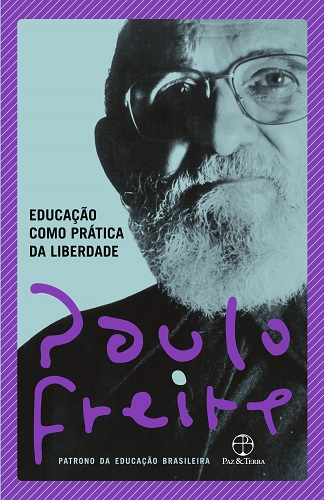
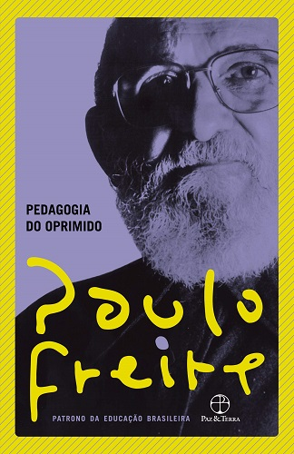
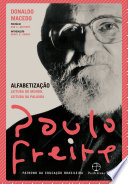
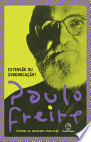
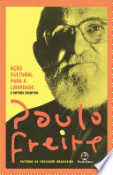

|
Reconhecido internacionalmente (29 títulos de “doutor honoris causa” lhe foram concedidos por universidades da Europa e América),
Paulo Freire continua extremamente atual. A leitura de sua obra permite amadurecer conceitos como a necessidade de uma
educação praticada a partir de uma perspectiva crítica e autônoma para a formação de sujeitos capazes de transformar politico e
socialmente suas realidades.
|
|  | Educação como prática da Liberdade Educação Como Prática da Liberdade é o primeiro livro do educador brasileiro Paulo Freire, escrito depois da queda de João Goulart e concluído durante o exílio do autor no Chile. É considerado pelo próprio autor como um predecessor do seu magnum opus, Pedagogia do Oprimido. O autor classifica a sociedade brasileira de sua época como "em trânsito". Em trânsito entre o passado de mutismo, opressão e silenciamento das massas; e a emersão das consciências para a participação do povo nos destinos do país e de si próprios. Essa fase de transição, afirma o autor, exigia uma educação que lhe fosse adequada. Tal educação haveria de ser, portanto, uma educação para a prática da liberdade. O primeiro capítulo é sobre a fase de transição da sociedade brasileira. O segundo explica com mais detalhes como era a sociedade antes dessa ruptura; isto é, descreve a sociedade fechada, alienada de si. O terceiro capítulo apresenta o tipo de educação que a nova sociedade exigia (no pretérito, pois o golpe de 1964 frustrou os planos). Por fim, no último capítulo, é apresentado o método pedagógico conhecido hoje como método Paulo Freire. Um apêndice ao final fornece exemplos das imagens usadas nos círculos de cultura, nos quais era aplicado o método |
| Pedagogia do Oprimido Pedagogia do Oprimido é o mais conhecido trabalho do educador brasileiro Paulo Freire. É considerado pelo próprio autor como uma continuação do seu primeiro livro, Educação Como Prática da Liberdade. Freire defende que a educação tradicional, chamada por ele de educação bancária, é opressiva e não permite que os educandos se desenvolvam de maneira crítica e reflexiva. Em vez disso, ele propõe uma educação dialógica, isto é, fundamentada no diálogo. Tal educação, ao contrário da bancária, tem por base a participação ativa dos educandos no processo de aprendizado e na reflexão crítica sobre a realidade em que vivem. O diálogo começa ainda na escolha do conteúdo programático, isto é, do currículo a ser administrado nos círculos de cultura (locais onde o diálogo e a alfabetização ocorrem). Escrito durante o exílio no Chile, o livro foi originalmente publicado em espanhol em 1968. Na época, o Brasil vivia a ditadura militar. Em virtude disso, o livro foi publicado no país somente em 1974. Nessa época, já havia traduções para o inglês, italiano, francês e alemão. Em Portugal o livro foi publicado pela primeira vez em 1972 pelas Edições Afrontamento. |
 |
|  | Alfabetização: leitura do mundo, leitura da palavra Alfabetização: leitura do mundo, leitura da palavra tece uma crítica rigorosa e inovadora às propostas tradicionais de alfabetização desenvolvidas tanto em nosso país como nos Estados Unidos, as quais na maioria das vezes buscam o aprendizado da língua oficial pelo chamado padrão culto. Considerando a alfabetização um processo que deve ao mesmo tempo resgatar e recriar a experiência vivida pelo alfabetizando, Paulo Freire teoriza e pratica uma alfabetização crítica e libertadora que instrumentaliza a classe oprimida para que possa alcançar a reapropriação de sua história pela construção coletiva do conhecimento, reabilitando sua capacidade de intervir nas transformações de seu contexto social. |
| Extensão ou Ccomunicação? Escrito no Chile, em 1968, Extensão ou comunicação? analisa o problema da comunicação entre o técnico e o camponês no processo de desenvolvimento de uma nova sociedade agrária. Neste ensaio preciso sobre a escolha metodológica dos educadores, Paulo Freire faz a defesa da educação que se dá pela troca, pelo diálogo, pela comunicação e pelo aprendizado mútuo, e combate as convicções que justificam a prática da transferência de conhecimento como via de mão única para a pedagogia. Conhecer, na verdade, exige uma presença curiosa, uma busca constante, invenção e reinvenção permanentes. |
 |
|  | Ação cultural: Para a liberdade e outros escritos Neste livro, Paulo Freire aborda os mais diferentes aspectos da realidade brasileira com o olhar de quem luta por uma mudança profunda e crítica do mundo. Reunindo textos escritos entre 1968 e 1974, mas de atualidade desconcertante, e abordando temas que vão da alfabetização à reforma agrária, Ação cultural para a liberdade e outros escritos é indispensável para a compreensão dos obstáculos impostos à verdadeira justiça social e mostra por que, numa época tão mecanicista. A verdadeira pedagogia é aquela que olha a todo momento para a expressividade do aluno, para o exercício de sua compreensão crítica da sociedade, e não para a sua acomodação. |